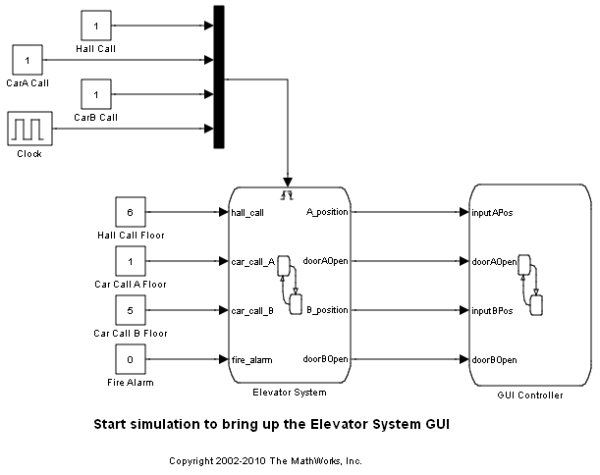
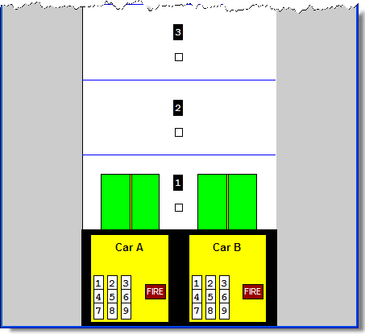
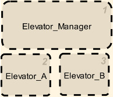
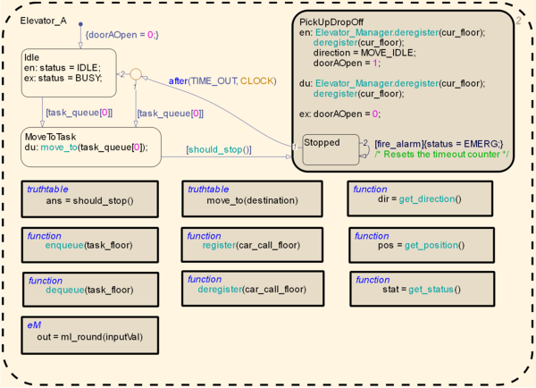
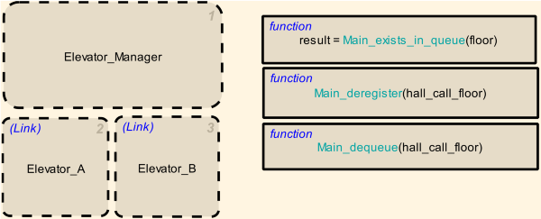
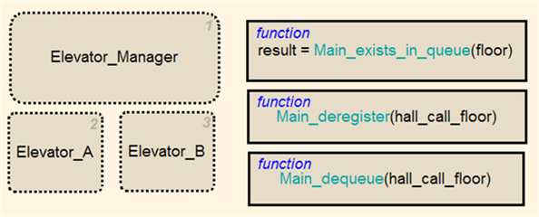
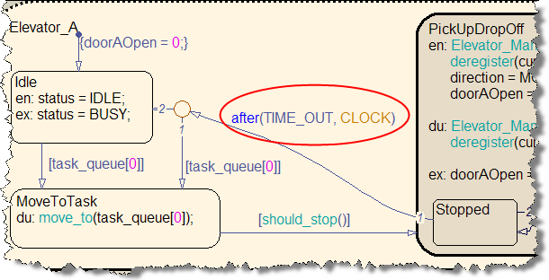
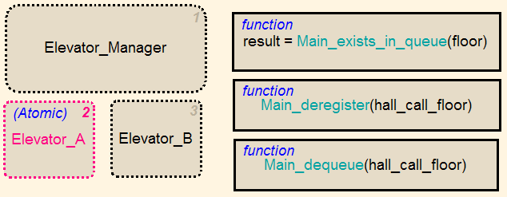
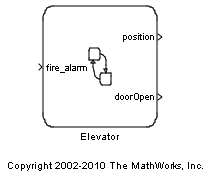

Atomic サブチャートを使用したエレベーター システムのモデル作成
このデモでは、呼び出しキューイング、火災警報機の応答、ホールの呼び出しなど、近代的なエレベーターで期待される共通機能のいくつかを備えた、2 台のかごを持つエレベーター システムのモデル化方法を示します。
デモの内容
- この構造体を導入する前後のモデルを比較することによって、このようなアプリケーションで Atomic サブチャートを使用する利点を示す。
- Atomic サブチャートを使用するようにエレベーター システム モデルを変更するために必要なワークフローを示す。
目次
エレベーター モデル
上記のモデルのシミュレーションでは、次のグラフィカル ユーザー インターフェイス (GUI) が表示されます。

この GUI では、各階の廊下のボタンをクリックできます。このボタンは各階数の下の白い四角形で表されています。また、個々のエレベーターかご内のボタンもクリックできます。このボタンは GUI 下部の黄色い背景にある番号付きの白い四角形で表されています。
元のモデルの概要
Elevator System チャートは次の 3 つの主要コンポーネントで構成されています。
このチャートの主体は Elevator_A と Elevator_B というサブチャートです。これらのサブチャートはモデル内のエレベーターかごを表します。エレベーターかごは Elevator_Manager サブチャートによって制御されます。
これらの各サブチャートはユーザー リクエストのキューを管理します。
- Elevator_Manager はホール キューを管理します。このキューには、各階のボタンが押されたときに生成されるすべてのリクエストが入ります。
- 各エレベーターかごには、処理する必要のあるすべてのユーザー リクエストを表す独自のキューがあります。
Elevator_Manager チャートの主な目的は、入力されるすべてのユーザー リクエスト (モデルでは入力イベントとして表される) の処理と Elevator_A または Elevator_B への割り振りです。割り振りは、どちらのかごが近くにあるか、利用可能かなどの基準に基づいて行われます。
エレベーターかご (Elevator_A および Elevator_B サブチャート)
各エレベーターかごは、キュー内のリクエストを繰り返し処理して、そのステータス (BUSY や IDLE など) と位置を更新し続けます。更新された位置は、かごの移動やドアの開閉など、エレベーターかごの GUI 表現に使用されます。
元のモデルを開くには、ここをクリックしてください。
Atomic サブチャートを使用した元のモデルの変更
上記のサブチャートを参照してください。エレベーターかごのサブチャートは、個々のユーザー リクエスト キューを処理するためのコード (ステート、関数、ローカル変数など) がほとんど同じであることに注意してください。2 つのエレベーターかごは異なる入力に対して同じように応答するので、その動作を表すサブチャートはリンクされた Atomic サブチャートの絶好の候補です。
エレベーターかごのサブチャートを、下図のようにエレベーターかごを表す 1 つのライブラリ Atomic サブチャートへの 2つのリンクに置き換えることができます。
上記の例では、Elevator_A と Elevator_B の両方が sf_elevator_lib ライブラリ モデル内の Elevator チャートを参照しています。ライブラリ Atomic サブチャートは、リンクされたインスタンスを変更せずに微調整できます。
新しいモデルでの Atomic サブチャートのもう 1 つの用途は、GUI Controller チャート内にあります。各 GUI エレベーターかごを制御するためのロジックは同じなので (元のチャートを開くには、ここをクリック)、GUI かごコントローラーもライブラリ Atomic サブチャートにすることができます。それに 2 回リンクするだけです。リンクされた Atomic サブチャートを持つ GUI Controller チャートを開くには、ここをクリックしてください。
上で説明した Atomic サブチャートを使用する最終的なモデルを開くには、ここをクリックしてください。
Atomic サブチャートを使用する利点
エレベーターかごに固有のすべてのロジックを、別個の Stateflow チャート内に入れることができます。この設計には次のような利点があります。
- チームでの開発がしやすくなります。エレベーターのロジックとエレベーター マネージャーのロジックが別々の MDL ファイルに入っているので、提出時のマージ競合を心配することなく仕事を分担できます。
- Stateflow はコード生成を通してシミュレーションを行うので、チャートを 2 つに分割すると、シミュレーション時に行う部分的な変更のテスト時間を短縮できます。
- ライブラリ エレベーター チャートが再利用されるので、ロジックの変更は 1 回で済みます。同じ変更を複数の場所で繰り返す必要はありません。
- この再利用は、Real-Time Workshop で両方のエレベーターの再使用可能コードを生成するときにも役立ちます。この例では、エレベーター サブシステムのコードが約 500 行減り、約 1500 行から約 1000 行になります。
- エレベーターのロジックをチャートに分離することによって、Real-Time Workshop でエレベーター チャートに対するファイル パッケージ化オプションを制御できます。
付録: 元のモデルに Atomic サブチャートを組み込む方法
エレベーターかごのサブチャートを Atomic サブチャートに変換するには、いくつかの手順が必要です。これらの手順は Atomic サブチャートの使用規則を反映しています。これらの規則の詳細は、こことここをクリックして参照してください。
下記の手順では、Elevator_A サブチャートからライブラリ Atomic サブチャートを作成し、このライブラリのリンクされたインスタンスをエレベーターかごのサブチャートの代わりに使用します。
手順 1: Elevator_Manager の関数をエクスポートして Atomic サブチャートから見えるようにします。
コンテナ チャートで定義されている関数は、エクスポートしなければ Atomic サブチャートから呼び出すことができないので、Elevator_A と Elevator_B から呼び出される Elevator_Manager 内の関数をチャート レベルにエクスポートする必要があります。これにより、その関数が Atomic サブチャートから見えるようになります。
チャート レベルに関数をエクスポートするには、Elevator System チャートの [チャート レベルのグラフィカル関数をエクスポート (グローバル)] プロパティを true に設定する必要があります。
次に、エレベーターかごのサブチャートによって使用されるすべての関数を Elevator_Manager チャートから親チャートに移行します (下図を参照)。

移行されたグラフィック関数は、エレベーターかごのサブチャート内の関数と区別するために名前を変更する必要があります。たとえば、関数 deregister の名前を Main_deregister に変更できます。次に、これらの関数を使用するように Elevator_A を変更します。
メモ: エレベーターかごのサブチャートは Elevator_Manager サブチャートで定義されているローカル変数 (hall_call_status) に直接アクセスします。Atomic サブチャートはチャート レベルのデータにしかアクセスできないので、変数 hall_call_status はそれを含む親レベルのチャートに出す必要があります。
新しくスコープ設定された変数を使用するように Elevator_A サブチャートを変更します。
手順 2: 入力イベントに対する依存性を除去します。
サブチャート Elevator_A には、エレベーターが目的の階に到着したときにドアを開いたままにしておくためのタイマーを提供する CLOCK という入力イベントがあります (下図を参照)。

Atomic サブチャートでは入力イベントがサポートされていないので、入力イベント CLOCK を使用する代わりに、絶対時間の時相論理を使用します。たとえば、CLOCK イベントの代わりに "sec" を使用できます。
手順 3: エレベーターかごのサブチャートの代わりに使用するライブラリ Atomic サブチャートを作成します。
Elevator_A を Atomic サブチャートにするためのすべての要件を満たしたら、サブチャートを右クリックして、[コンテンツの編集] -> [Atomic サブチャート] を選択します。下図のようにサブチャート Elevator_A に (Atomic) というラベルが表示されます。

ステートを Atomic サブチャートに変換する方法の詳細は、ここをクリックしてください。
次に、Elevator_A を使用してライブラリ Atomic サブチャートを作成します。ライブラリ Atomic サブチャートを作成したら (下図を参照)、それをコピーし、Elevator System チャート内に 2 回貼り付けて、サブチャート Elevator_A および Elevator_B を置き換えます。
ライブラリ モデルを開くには、ここをクリックしてください。
手順 4: リンクされた両方の Atomic サブチャートの入力/出力/データを親チャートの入力/出力/データにマッピングします。
Elevator System チャートには 4 つの出力 (エレベーターかごのサブチャートごとに 2 つの出力) があります。エレベーターかごの各サブチャートは、現在の位置とドアが開いているかどうかの現在のステータスを出力します。これらの出力は、エレベーターかごの個々のサブチャートに適切にマッピングする必要があります。
Elevator System の入力の 1 つ (fire_alarm) は、エレベーターかごのサブチャートに直接送られるので、これもマッピングする必要があります。
最後に、エレベーターかごは各階のボタンのステータス (Elevator System の変数 hall_call_status に保存) を知る必要があるので、それを Atomic サブチャートのデータ ストア メモリにマッピングする必要があります。
以下に、上記のマッピングを行うためのダイアログ ボックスのスクリーンショットを示します。